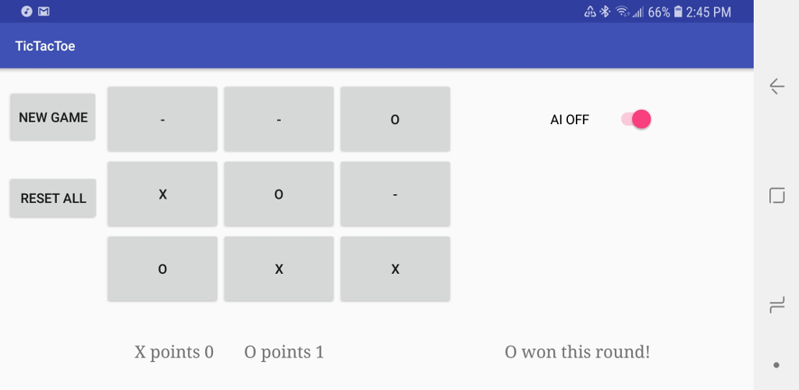
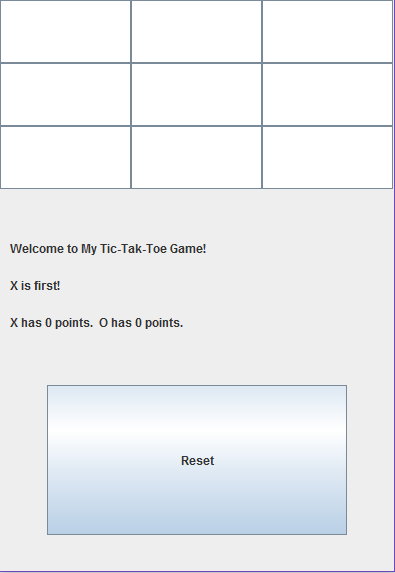

In my 2nd year of Engineering I took a course called Engineering Communications. Where I build my own GIS(Geographical Information System). With the support of c++ and a modified OpenGL library me and my group of 2 friends
designed a mapping software similar to Google maps.
Our final product was able to search streets, intersections, and POI. With a Dijkstra algorithm we were also able to give the user directions to travel between any two points in the map.
View Screen shots
In the Summer of 2018 I used java to release my very own Tic Tac Toe game on the android application store. The game
has a built in AI for its single player game mode. The AI can be disabled and enabled by the user as needed. My goal was to provide a formidable opponent
that will take multiple tries to out maneuver and defeat.
In addition, the game provides the user with directions indicating the next player and prompts the user when the game ends. When there is a win or loss
the game has a designated score board that keeps track of which player is winning.
Go to PlayStore

Using Java I designed a front-end on windows in addition to the android platform for my Tic Tac Toe Game. The game follows the same ideas keeps
track of the scores, gives the user instructions accordingly and has a builtin AI to play against.
Feel free go ahead and download the game and try it out for yourself. Just make sure you have java runtime environment installed and you have a windows computer.
Download My Game
This is what the basic layout of the game looks like.

To demonstrate my understanding html and css I designed this website. My goal is to showcase the projects I have done over the years to potential employers. Please feel free to leave any comments or suggestions in the Contact Me page.
I have had an interest in photography since I was in kindergarten. I started a old school film camera with a lot practice and many blurry pictures later here we are.
All the picture in the web site was photographed by me. I have a Cannon T3 with a two high powered lenses. I mainly focus on macro, landscape and nature Photography. Photography is one of the best ways
I express myself so please feel free to take a look at my work.
View my Work
Created By: Mark Perera
Last Updated on: 2018-06-09